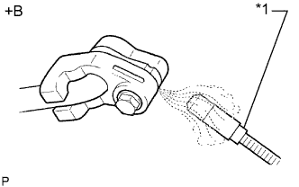

ЗАДНИЙ КОНДИЦИОНЕР ВОЗДУХА > УСТАНОВКА |
| 1. УСТАНОВИТЕ ЗАДНИЙ ВОЗДУХОВОД КРЫШИ № 1 |
Установите воздуховод и закрепите его 4 фиксаторами.
| 2. УСТАНОВИТЕ ЗАДНИЙ ВОЗДУХОВОД КРЫШИ № 2 |
Установите воздуховод и закрепите его фиксатором.
| 3. УСТАНОВИТЕ ЗАДНИЙ ВОЗДУХОВОД КРЫШИ № 3 |
Установите воздуховод и закрепите его фиксатором.
| 4. УСТАНОВИТЕ ЗАДНИЙ ВОЗДУХОВОД КРЫШИ № 4 |
Установите воздуховод и закрепите его фиксатором.
| 5. УСТАНОВИТЕ ЗАДНИЙ ВОЗДУХОВОД КРЫШИ № 5 |
Установите воздуховод и закрепите его фиксатором.
| 6. УСТАНОВИТЕ ЗАДНИЙ КОНДИЦИОНЕР В СБОРЕ |
Установите задний кондиционер на автомобиль и закрепите его 5 болтами.
Подсоедините 3 разъема.
Установите 3 зажима.
| 7. УСТАНОВИТЕ ЗАДНИЙ ВОЗДУХОВОД КРЫШИ № 1 |
Вставьте верхнюю часть воздуховода в воздуховод со стороны крыши и, используя эту точку как центр вращения, поверните воздуховод на место и установите его на задний кондиционер.
Установите пластину охладителя и закрепите ее 2 захватами.
| 8. УСТАНОВИТЕ ЗАДНИЙ БОКОВОЙ ВОЗДУХОВОД № 3 |
Установите воздуховод и закрепите его 2 фиксаторами.
| 9. УСТАНОВИТЕ ЗАДНИЙ БОКОВОЙ ВОЗДУХОВОД № 2 |
Установите воздуховод, закрепите его 2 фиксаторами и введите в зацепление зажим.
| 10. УСТАНОВИТЕ ПРАВУЮ ПОДУШКУ БЕЗОПАСНОСТИ ЗАНАВЕСОЧНОГО ТИПА В СБОРЕ |
Установите подушку безопасности занавесочного типа и закрепите ее 17 новыми болтами.
Подсоедините разъем.
| 11. ПОДСОЕДИНИТЕ ТРУБКУ И ОБВЯЗКУ СИСТЕМЫ КОНДИЦИОНИРОВАНИЯ В СБОРЕ |
Снимите с трубки виниловую ленту.
Нанесите необходимое количество компрессорного масла на 2 новых кольцевых уплотнения и пригоночные поверхности трубки и обвязки системы кондиционирования.
Установите 2 кольцевых уплотнения на трубку и обвязку системы кондиционирования.
Подсоедините трубку и обвязку системы кондиционирования в сборе.
Заверните болт.
Подсоедините входной патрубок отопителя и выходной патрубок отопителя.
С помощью плоскогубцев зажмите захваты фиксаторов и сдвиньте 2 фиксатора.
| 12. УСТАНОВИТЕ ПРАВУЮ ЗАДНЮЮ БОКОВУЮ ОБЛИЦОВОЧНУЮ ПАНЕЛЬ В СБОРЕ |
| 13. УСТАНОВИТЕ ПРАВУЮ БОКОВУЮ ОБЛИЦОВОЧНУЮ ПАНЕЛЬ ПОЛКИ БАГАЖНОГО ОТДЕЛЕНИЯ |
Для моделей без заднего сиденья № 2:
Подсоедините все разъемы.
Пропустите опору рычага фиксации спинки заднего сиденья через боковую облицовочную панель полки багажного отделения.
Установите боковую облицовочную панель полки багажного отделения, закрепив ее 5 фиксаторами и 8 захватами.
Вверните 4 болта и винт.
Введите в зацепление 6 захватов и 2 направляющих, чтобы установить опору рычага фиксации спинки заднего сиденья на боковую облицовочную панель полки багажного отделения.
Установите напольное крепление ремня безопасности заднего сиденья № 1 и закрепите его болтом.
Для моделей с задним сиденьем № 2:
Подсоедините все разъемы.
Установите боковую облицовочную панель полки багажного отделения, закрепив ее 4 фиксаторами и 8 захватами.
Вверните 2 болта и винт.
Установите напольное крепление ремня безопасности заднего сиденья № 2 и закрепите его болтом.
Установите напольное крепление ремня безопасности заднего сиденья № 1 и закрепите его болтом.
| 14. УСТАНОВИТЕ ВЕРХНИЙ ПОРУЧЕНЬ В СБОРЕ (для моделей с задним сиденьем № 2) |
Установите верхний поручень и закрепите его 2 болтами.
| 15. УСТАНОВИТЕ ЗАГЛУШКУ ВЕРХНЕГО ПОРУЧНЯ (для моделей с задним сиденьем № 2) |
Введите в зацепление 2 захвата и установите заглушку верхнего поручня.
| 16. УСТАНОВИТЕ ПРАВУЮ ПЕРЕДНЮЮ БОКОВУЮ ОБЛИЦОВОЧНУЮ НАКЛАДКУ ПОЛКИ БАГАЖНОГО ОТДЕЛЕНИЯ (для моделей с задней крышкой) |
Введите в зацепление 2 захвата, чтобы закрепить переднюю боковую облицовочную накладку полки багажного отделения
| 17. УСТАНОВИТЕ КОЛПАЧОК КРЕПЛЕНИЯ ЗАДНЕЙ КРЫШКИ № 1 (для моделей без задней крышки) |
Введите в зацепление 2 захвата, чтобы закрепить колпачок крепления задней крышки № 1.
| 18. УСТАНОВИТЕ ЗАЩЕЛКУ ОБЛИЦОВКИ БАГАЖНОГО ОТДЕЛЕНИЯ № 1 |
Установите защелку облицовочной панели багажного отделения № 1, повернув ее по часовой стрелке.
| 19. УСТАНОВИТЕ НАКЛАДКУ КРЕПЛЕНИЯ ПОЯСНОГО РЕМНЯ БЕЗОПАСНОСТИ ЗАДНЕГО СИДЕНЬЯ № 1 |
Введите в зацепление 3 захвата, чтобы установить накладку крепления поясного ремня безопасности заднего сиденья № 1.
| 20. УСТАНОВИТЕ ЗАДНИЙ НАПОЛЬНЫЙ КОВРИК (для моделей без заднего сиденья № 2) |
Введите в зацепление 4 захвата, чтобы установить задний напольный коврик.

| *A | для моделей без направляющей полки багажного отделения | *B | для моделей с направляющей полки багажного отделения |
| *C | Для сидений с противоположным расположением | - | - |
| 21. УСТАНОВИТЕ ПРАВУЮ БОКОВУЮ НАПРАВЛЯЮЩУЮ ПОЛА БАГАЖНОГО ОТДЕЛЕНИЯ (для моделей с направляющей полки багажного отделения) |
| 22. УСТАНОВИТЕ ЛЕВУЮ БОКОВУЮ НАПРАВЛЯЮЩУЮ ПОЛА БАГАЖНОГО ОТДЕЛЕНИЯ (для моделей с направляющей полки багажного отделения) |
Установите боковую направляющую пола, закрепив ее 3 болтами.
| 23. УСТАНОВИТЕ ЗАДНЮЮ ОПОРНУЮ ПЛАСТИНУ КОВРИКА ЗАДНЕГО ПОЛА (для моделей без заднего сиденья № 2) |
Введите в зацепление 5 фиксаторов и 4 захвата, чтобы установить заднюю опорную пластину коврика заднего пола.
| 24. УСТАНОВИТЕ ПАНЕЛЬ ПОЛКИ БАГАЖНОГО ОТДЕЛЕНИЯ № 1 (для моделей без заднего сиденья № 2) |
Установите панель полки багажного отделения № 1, закрепив ее фиксатором.
| 25. УСТАНОВИТЕ ПЕРЕДНЮЮ ОБЛИЦОВОЧНУЮ НАКЛАДКУ БАГАЖНОГО ОТДЕЛЕНИЯ (для моделей без заднего сиденья № 2) |
 |
Установите защелку ремня для удержания багажа и переднюю облицовочную накладку багажного отделения и закрепите их болтом.
| *1 | Защелка ремня для удержания багажа |
Введите в зацепление 4 захвата для установки колпачка.
| 26. УСТАНОВИТЕ ЗАДНЮЮ КРЫШКУ В СБОРЕ (для моделей с задней крышкой) |
Установите заднюю крышку.
| 27. УСТАНОВИТЕ НАКЛАДКУ КРЕПЛЕНИЯ ПОЯСНОГО РЕМНЯ БЕЗОПАСНОСТИ |
Введите в зацепление 3 захвата, чтобы установить накладку крепления поясного ремня безопасности
| 28. УСТАНОВИТЕ УПЛОТНИТЕЛЬ ОБШИВКИ ПРОЕМА ПРАВОЙ ЗАДНЕЙ ДВЕРИ |
| 29. УСТАНОВИТЕ ОПОРНУЮ НАКЛАДКУ ПРАВОЙ ЗАДНЕЙ ДВЕРИ |
| 30. УСТАНОВИТЕ ПРАВУЮ ЗАДНЮЮ БОКОВУЮ ОПОРНУЮ НАКЛАДКУ (для моделей с задним сиденьем № 2) |
| 31. УСТАНОВИТЕ ЗАДНЮЮ НАКЛАДКУ ПОРОГА ПОЛА № 1 (для моделей с задним сиденьем № 2) |
Для складываемого вдвое раздельного сиденья 60/40 с левой стороны:
Установите спинку заднего сиденья № 1 в сборе (Нажмите здесь).
Для складываемого вдвое раздельного сиденья 60/40 с правой стороны:
Установите спинку заднего сиденья № 1 в сборе (Нажмите здесь).
| 32. УСТАНОВИТЕ СПИНКУ ЗАДНЕГО СИДЕНЬЯ № 1 В СБОРЕ |
для сидений раздельного типа 60/40 с двойным складыванием с левой стороны:
Установите спинку заднего сиденья № 1 в сборе (Нажмите здесь).
для сидений раздельного типа 60/40 с двойным складыванием с правой стороны:
Установите спинку заднего сиденья № 1 в сборе (Нажмите здесь).
| 33. УСТАНОВИТЕ ЗАДНЕЕ СИДЕНЬЕ № 2 В СБОРЕ |
для сидений с ручным приводом:
Установите заднее сиденье № 2 в сборе (Нажмите здесь).
Для сидений с электроприводом:
Установите заднее сиденье № 2 в сборе (Нажмите здесь).
Для моделей с противоположно расположенными сиденьями:
Установите заднее сиденье № 2 в сборе (Нажмите здесь).
| 34. ПОДСОЕДИНИТЕ ПРОВОД К ОТРИЦАТЕЛЬНОМУ (-) ВЫВОДУ АККУМУЛЯТОРНОЙ БАТАРЕИ |
| 35. ДОБАВЬТЕ ОХЛАЖДАЮЩУЮ ЖИДКОСТЬ ДВИГАТЕЛЯ |
Для моделей с 1GR-FE:
Добавьте охлаждающую жидкость двигателя (Нажмите здесь).
Для моделей с 2TR-FE:
Добавьте охлаждающую жидкость двигателя (Нажмите здесь).
Для моделей с 1KD-FTV:
Добавьте охлаждающую жидкость двигателя (Нажмите здесь).
Для моделей с 5L-E:
Добавьте охлаждающую жидкость двигателя (Нажмите здесь).
| 36. ЗАПРАВЬТЕ ХЛАДАГЕНТ |
Используя вакуумный насос, выполните вакуумную очистку.
Заправьте хладагент HFC-134a (R134a).
| Код модели | Тип системы кондиционирования | Блок охлаждения | Заправочный объем хладагента |
| Кроме моделей, перечисленных ниже | Для моделей без заднего кондиционера | Для моделей с холодильной камерой | 600 +/-30 г (21,2 +/-1,1 унции) |
| Для моделей без холодильной камеры | 550 +/-30 г (19,3 +/-1,1 унции) | ||
| Для моделей с задним кондиционером | Для моделей с холодильной камерой | 800 +/-30 г (28,2 +/-1,1 унции) | |
| Для моделей без холодильной камеры | 770 +/-30 г (27,2 +/-1,1 унции) | ||
| Для моделей с задним кондиционером Для моделей, предназначенных для эксплуатации в холодном климате | Для моделей без холодильной камеры | 720 +/-30 г (25,3 +/-1,1 унции) | |
| TRJ150L-GKMEKV TRJ150L-GKPEKV TRJ155L-GJPEKV GRJ150L-GKFEKV GRJ150L-GKAEKV KDJ150L-GKFEYV KDJ150L-GKAEYV | Для моделей без заднего кондиционера | Для моделей с холодильной камерой | 600 +/-30 г (21,2 +/-1,1 унции) |
| Для моделей без холодильной камеры | 550 +/-30 г (19,3 +/-1,1 унции) или 600 +/-30 г (21,2 +/- 1,1 унции) *1 | ||
| Для моделей с задним кондиционером | Для моделей с холодильной камерой | 800 +/-30 г (28,2 +/-1,1 унции) | |
| Для моделей без холодильной камеры | 770 +/-30 г (27,2 +/-1,1 унции) |
| 37. ПРОГРЕЙТЕ ДВИГАТЕЛЬ |
После заправки хладагента в течение, по крайней мере, 2 мин. прогрейте двигатель при частоте вращения коленчатого вала 1850 об/мин.
| 38. ПРОВЕРЬТЕ, НЕТ ЛИ УТЕЧЕК ОХЛАЖДАЮЩЕЙ ЖИДКОСТИ |
Для моделей с 1GR-FE:
Проверьте, нет ли утечек охлаждающей жидкости (Нажмите здесь).
Для моделей с 2TR-FE:
Проверьте, нет ли утечек охлаждающей жидкости (Нажмите здесь).
Для моделей с 1KD-FTV:
Проверьте, нет ли утечек охлаждающей жидкости (Нажмите здесь).
Для моделей с 5L-E:
Проверьте, нет ли утечек охлаждающей жидкости (Нажмите здесь).
| 39. ПРОВЕРЬТЕ, НЕТ ЛИ УТЕЧЕК ГАЗООБРАЗНОГО ХЛАДАГЕНТА |
После заправки газообразного хладагента с помощью галогенного течеискателя проверьте, нет ли утечек хладагента.
Перед проверкой обеспечьте выполнение следующих условий:
|  |
С помощью галогенного течеискателя проверьте, нет ли утечки из трубопровода хладагента.
| *1 | Галогенный течеискатель |
| *a | Проверка на наличие утечек |
Если в сливном шланге утечка газа не обнаруживается, снимите блок управления электродвигателем вентилятора (сопротивление вентилятора) с блока охлаждения. Вставьте датчик галогенного течеискателя в блок и выполните испытание.
Отсоедините разъем и подождите примерно 20 мин. Поднесите галогенный течеискатель к контактному датчику давления и выполните испытание.
| 40. ПРОВЕРЬТЕ КОНТРОЛЬНУЮ ЛАМПУ АВАРИЙНОГО СОСТОЯНИЯ SRS |
Проверьте контрольную лампу аварийного состояния SRS (Нажмите здесь).
| 41. УСТАНОВИТЕ ВЕРХНЕЕ УПЛОТНЕНИЕ КРОНШТЕЙНА РАДИАТОРА |
Установите верхнее уплотнение кронштейна радиатора и закрепите его 13 фиксаторами.